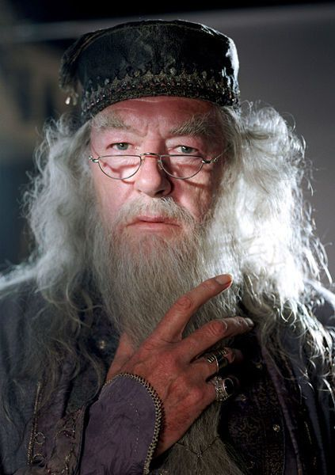
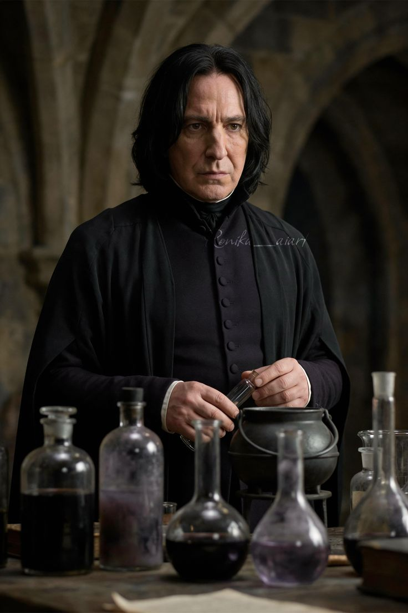

The Wise & Powerful
Meet Our Hogwarts Professors
Guided by the greatest minds in wizardry, our students learn from legends who have shaped magical history.

Albus Dumbledore
Headmaster
Transfiguration & Leadership
One of the greatest wizards of all time, known for his wisdom, powerful magic, and dedication to the greater good.
Order of Merlin, First Class
Supreme Mugwump

Minerva McGonagall
Deputy Headmistress
Transfiguration
Strict but fair, an Animagus who can transform into a cat. Head of Gryffindor House and a formidable witch.
Order of Merlin, Second Class
Gryffindor Head

Severus Snape
Potions Master
Potions & Defense Against the Dark Arts
Brilliant potioneer with unparalleled knowledge of the dark arts. Head of Slytherin House and a complex hero.
Order of Merlin, Second Class
Slytherin Head